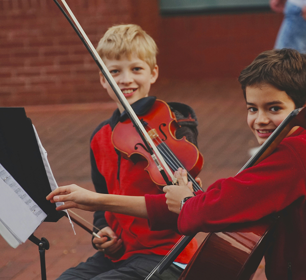
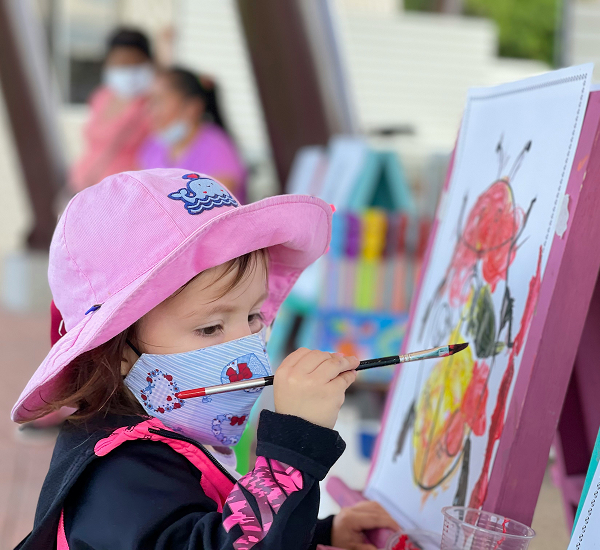
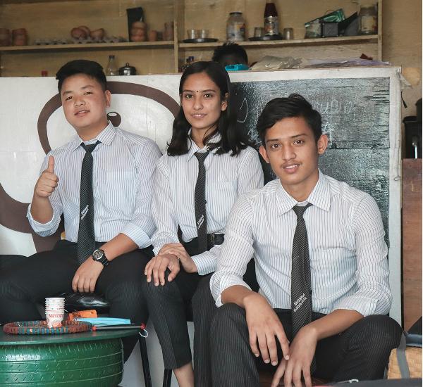

예술의 미래를 만드는
든든한 동반자
1977년부터 클래식 음악과 미술의 참된 후원자로, 뛰어난 영재를 발굴하고
그들의 빛나는 꿈을 함께 합니다.
Classical Music
대한민국 최고의
대한민국 최고의
음악영재 발굴 시스템
뛰어난 실력을 갖춘 어린 음악인들을 선발하는 데뷔 무대를 마련 시스템
금호영재콘서트ㆍ금호영아티스트콘서트ㆍ금호영체임버콘서트는 매주 토요일 오후 3시와 7시 30분에 금호아트홀 연세에서 열리고 있으며, 매년 5월과 10월 두 차례 열리는 오디션을 통해 연주자를 선발하고 있습니다.


Contemporary Art
한국 미술계를 선도할
한국 미술계를 선도할
미술영재 지원사업
금호미술관을 통해 한국 미술계를 선도하는 작가들을 지원 시스템
‘금호영아티스트’는 2000년대 중반, 미술계에서 젊은 작가에 대 한 관심이 높아지던 흐름 속에서 시작되었으며, 주목할 만한 활동을 보여주는 어린이 작가들을 선정한 초대 전시를 통해, 미술문화 발전에 기반이 되고자 합니다.
scholarship
꿈을 향한 도전,
꿈을 향한 도전,
함께 하는 금호문화재단
어려운 환경 속에서도 빛나는 학업 성적, 미래를 위한 첫걸음을 함께 합니다.
어려운 환경에도 불구하고 학업이 우수한 중, 고등학생, 전국주요대학교의 재학생, 국내에서 유학 중인 외국인 대학생을 선발하여 학생들이 꿈을 잃지 않도록 격려하고 있습니다.
